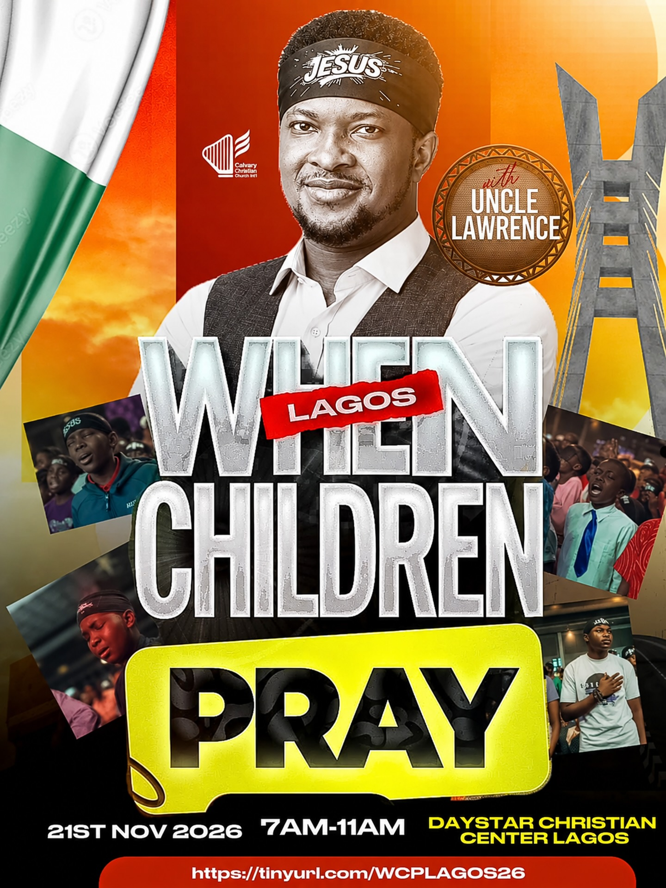
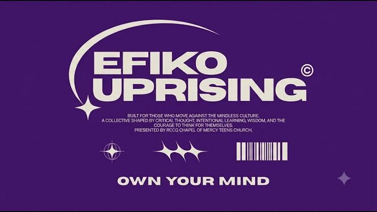

Pharmacy & People
A foundation in pharmacy and an interest in health, people and the importance of informed decisions.
Pharmacist, strategist and builder. Passionate about ideas, people and the possibilities that emerge when vision meets intentional action.
Get to know me ↓
Hello, I'm Precious Odumosu.
I am a pharmacist, strategist and builder with a deep interest in people, ideas and the systems that help meaningful things come to life.
I enjoy working at the intersection of creativity, strategy and execution — helping individuals and organisations move from having an idea to making something tangible out of it.
Whether it is building a programme, organising an initiative, developing a community or bringing a vision to life, I find fulfilment in creating structure around possibilities.
[Replace or expand this paragraph with Precious's personal biography.]
My professional journey continues to evolve, shaped by learning, experimentation and a desire to contribute meaningfully.
A foundation in pharmacy and an interest in health, people and the importance of informed decisions.
An evolving passion for helping people organise ideas, create structure and translate vision into action.
Exploring ideas through projects, programmes and communities that create practical value.
[Add verified dates, qualifications, career milestones and relevant professional experiences.]
I believe meaningful work requires more than inspiration. It requires clarity, intentional decisions, thoughtful planning and the willingness to do the work.
I value the process of turning something uncertain into something structured, actionable and useful.
For me, the goal is not simply to create something impressive. It is to create something that matters.
Creating and contributing to things that have meaning beyond their appearance.
Making complex ideas easier to understand, communicate and act upon.
Remaining open to possibilities and exploring different ways to solve problems.
Building with people, supporting growth and creating room for others to thrive.
Outside strategy and professional work, I enjoy exploring ideas, reading, writing and engaging in creative expression.
I am drawn to leadership, faith, community and conversations that challenge the way we think about ourselves and the world.
[Add personal interests, favourite books, hobbies and other details in Precious's own voice.]
Explore beyond strategy →A few initiatives that reflect my interests in people, creativity, learning and community.

An initiative connected to children, faith and purposeful engagement.

A reading community built around learning and engagement.
I'm always interested in meaningful conversations, thoughtful collaborations and opportunities to bring good ideas to life.
Get in touch →